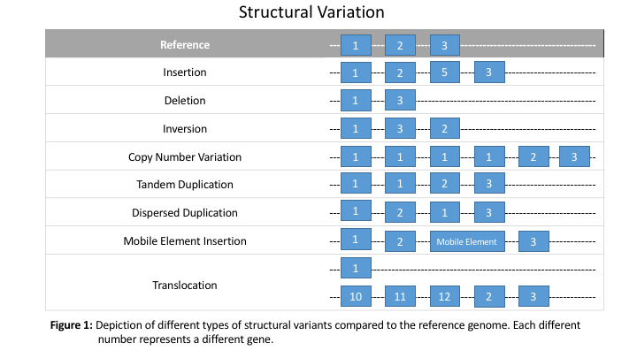

题目
1，从NCBI网页上自行下载GRCH37的GFF文件，GRCH37的氨基酸fasta文件。 从EGFR、KRAS和TP53基因各个转录本中挑选出氨基酸序列长度最长的转录本作为基因的代表。 2，根据提供的文件，绘制可以展示MSI、TMB、TNB、PDL1和HLA_LOH情况的图，请注意缺失值的处理。请考虑是否有必要依据性别、HLA_LOH的状态进行分组。 3，肿瘤发生发展的假说有哪些？ 4，肿瘤DNA层面常见的变异检测类型都有哪些？请列举几个分析软件及其特点。
目录：
题目目录：挑选出氨基酸序列长度最长的转录本EGFR NM_005228.5KRAS NM_001369786.1TP53 NM_000546.6Malmona 文件处理先简单查看描述性统计报告：检查各个特征值的类型并以数值型和分类型进一步分析：GenderHLALOHTNBLevel单变量展示MSIMSI-Gender_barMSI-Name_fillbyGenderMSI-Name_fillbyHLALOHMSI-TMB_CorrPDL1_LevelPDL1_Level_barTMBTMB-Gender_barTMB-Name_fillbyGenderTMB-Name_fillbyHLALOHTNBTNB-Gender_barTNB-Name_fillbyGenderTNB-Name_fillbyHLALOH肿瘤发生的假说种子与土壤假说瓦尔堡假说病毒假说肿瘤干细胞假说单克隆起源假说二次突变假说染色体畸变理论癌基因理论克隆演变&多步骤肿瘤发生免疫系统衰老假说昼夜节律假说活性氧假说细胞衰老假说肿瘤异常生殖激活肿瘤DNA层面常见的变异检测类型都有哪些？请列举几个分析软件及其特点。单个碱基对的变异 __SNVs小的插入或缺失 __InDels结构变异 __SVs拷贝数变异CNV基因融合分析软件
挑选出氨基酸序列长度最长的转录本
EGFR NM_005228.5
xxxxxxxxxx31>NP_005219.2 epidermal growth factor receptor isoform a precursor [Homo sapiens]2# 转录本3NC_000007.13 BestRefSeq mRNA 55086710 55279321 . + . ID=rna-NM_005228.5;Parent=gene-EGFR;Dbxref=GeneID:1956,Genbank:NM_005228.5,HGNC:HGNC:3236,MIM:131550;Name=NM_005228.5;gbkey=mRNA;gene=EGFR;product=epidermal growth factor receptor%2C transcript variant 1;tag=RefSeq Select;transcript_id=NM_005228.5KRAS NM_001369786.1
xxxxxxxxxx31>NP_001356715.1 GTPase KRas isoform a [Homo sapiens]2# 转录本3NC_000012.11 BestRefSeq mRNA 25358180 25403863 . - . ID=rna-NM_001369786.1;Parent=gene-KRAS;Dbxref=GeneID:3845,Genbank:NM_001369786.1,HGNC:HGNC:6407,MIM:190070;Name=NM_001369786.1;Note=The RefSeq transcript has 1 substitution compared to this genomic sequence;exception=annotated by transcript or proteomic data;gbkey=mRNA;gene=KRAS;inference=similar to RNA sequence%2C mRNA (same species):RefSeq:NM_001369786.1;product=KRAS proto-oncogene%2C GTPase%2C transcript variant c;transcript_id=NM_001369786.1TP53 NM_000546.6
xxxxxxxxxx31>NP_000537.3 cellular tumor antigen p53 isoform a [Homo sapiens]2# 转录本3NC_000017.10 BestRefSeq mRNA 7571739 7590808 . - . ID=rna-NM_000546.6;Parent=gene-TP53;Dbxref=GeneID:7157,Genbank:NM_000546.6,HGNC:HGNC:11998,MIM:191170;Name=NM_000546.6;gbkey=mRNA;gene=TP53;product=tumor protein p53%2C transcript variant 1;tag=RefSeq Select;transcript_id=NM_000546.6
Malmona 文件处理
先简单查看描述性统计报告：
检查缺失值情况,根据情况补缺：
检查各个特征值的类型并以数值型和分类型进一步分析：
查看数值型变量相关性：
相关性图中显示TMB、TNB、MSI三种强相关关系
查看分类型变量"Gender"、"HLALOH"、"TNBLevel":
Gender
初步结论：
- female/male各占50%；
- 特征HE在male中大多为NODATA；
- 特征CPS在male中全部为NODATA；
- 特征TMB在male中比female中更高；
- 特征TNB在male中比female中更高；
HLALOH
初步结论：
- HLALOH与年龄有较强的关联,年老的人更多的HLALOH—TRUE；
- 特征PD_L1_TPS在HLALOH—TRUE中大多为更高；
- 特征TMB在HLALOH—TRUE中大多为更高；
TNBLevel
初步结论：
- 特征HE在TNB−H中偏低,大部分无数据；
- 特征MSI与TNBLevel有较强的关联
单变量展示
MSI
MSI-Gender_bar
MSI-Name_fillbyGender
MSI-Name_fillbyHLALOH
MSI-TMB_Corr
PDL1_Level
PDL1_Level_bar
TMB
TMB-Gender_bar
TMB-Name_fillbyGender
TMB-Name_fillbyHLALOH
TNB
TNB-Gender_bar
TNB-Name_fillbyGender
TNB-Name_fillbyHLALOH
肿瘤发生的假说
种子与土壤假说
Stephen Paget的思考，并于1889年发表了一篇文章详细分析了引起癌症转移的“种子和土壤”假说。即：癌细胞通过血液和淋巴可以播种到其它组织并能使其周围细胞癌症化；并通过分析了735个乳腺癌病例，证实了癌症转移灶不是随机的，而是一些特定器官可以提供适合特定转移灶生长的环境。
瓦尔堡假说
即认为肿瘤细胞是由线粒体呼吸作用损伤导致的。奥托·海因里希·瓦尔堡发现，癌细胞以及许多体外培养的细胞在氧气充足的环境下通过葡萄糖酵解取代有氧呼吸，这被称为瓦尔堡效应。瓦尔堡假说即认为，瓦尔堡效应是癌症的根本原因。
病毒假说
1969年，Robert Huebner 和George Todaro开始了一系列研究，认为多数癌症都是由逆转录病毒基因表达造成的。
肿瘤干细胞假说
有学者提出了肿瘤干细胞在肿瘤发生、发展、转移过程中都有重要作用，但到底什么是肿瘤干细胞现在尚无准确定义。
单克隆起源假说
肿瘤是由单个突变细胞增殖而成的，即肿瘤是突变细胞单克隆增殖群，这称为肿瘤的单克隆起源假说。肿瘤的细胞遗传学研究结果证实，所有的肿瘤几乎都是单克隆起源，也就是说患者的所有肿瘤细胞都起源于一个前癌细胞。最初是一个关键的基因突变或一系列相关事件导致单一细胞向肿瘤细胞的转化，随后产生不可控制的细胞增殖，最后形成肿瘤。
二次突变假说
1971年，Alfred Knudson提出了突变打击思想，他在分析同一种类癌症中遗传性和非遗传性肿瘤之间的关系时，专门研究了发生双侧和单侧RB的特征，提出了二次打击论，认为肿瘤的发生是一种隐性事件，即野生型基因产物可以抑制肿瘤产生，而肿瘤中的这一对等位基因发生了失活，他称该基因为肿瘤抑制基因。我们目前的观点都建立在这些发现之上。我们现在都知道所有的人类癌症都有多种先天和后天的变化，许多这些变化都有可能影响到肿瘤的发生发展。
染色体畸变理论
1941年，Boveri提出肿瘤的染色体理论，认为肿瘤细胞来源于正常细胞，染色体畸变是引起正常细胞恶性转化的主要原因。
癌基因理论
现已证实，在机体中存在着与肿瘤发生密切相关的两类基因，一类为癌基因，另一类为肿瘤抑制基因。癌基因通过点突变、染色体易位、强启动子插入以及基因扩增等机制被激活，促进细胞无限增殖而导致肿瘤发生
克隆演变&多步骤肿瘤发生
1990年，Eric Fearon和Bert Vogelstein提出一个多步骤肿瘤发生的分子模式。他们认为肿瘤的演化是通过癌基因和抑癌基因，以及许多恶性细胞群体逐步选择的结果。这个模式总括了癌症发生的所有常见形式，被广泛接受。根据肿瘤的多步骤损伤学说，肿瘤的发生是一个分阶段多步骤的过程，一个细胞的癌变至少需要两次或者两次以上，有的肿瘤则需经过多次遗传损伤后才能完成恶性转化，涉及一系列的基因结构和功能的改变，而且癌变往往需要多个肿瘤相关基因的协同作用，需要经过多阶段的演变，最终才能诱发肿瘤的形成。在肿瘤发生的过程中，环境因素的影响不容忽视，一些环境因素促进或抑制某些基因的表达。
免疫系统衰老假说
邓迪大学的Thea Newman教授课题组和赫瑞•瓦特大学、爱丁堡大学、法国Curie学院的科学家们合作发现，这背后更大的原因并不是基因突变，关键在于衰退的免疫系统。Thea Newman团队分析了200万例18-70岁癌症患者的数据，以此构建了一个数学方程式，用于评估癌症发病率上升与免疫系统衰退的关系，并将其与100种不同癌症的年龄分布进行比较。结果显示，衰退的免疫系统在癌症的发生、发展中发挥的作用远超过预期。这意味着，预防癌症的关键可能在于免疫系统，而不是基因突变。
Palmer S, Albergante L, Blackburn CC, Newman TJ. Thymic involution and rising disease incidence with age. Proc Natl Acad Sci U S A. 2018 Feb 20;115(8):1883-1888. doi: 10.1073/pnas.1714478115. Epub 2018 Feb 5. PMID: 29432166; PMCID: PMC5828591.
昼夜节律假说
昼夜节律很大程度影响生理和代谢功能，其紊乱与患癌风险增加和肿瘤患者不良预后相关。此外，恶性程度高或侵袭性强的肿瘤中核心时钟基因或蛋白质的表达显著减弱，提示昼夜节律可能与细胞分化相关。新出现的证据表明：生物钟影响肿瘤细胞的代谢，通过与非时钟转录因子协同影响转录和代谢来控制肿瘤发展的进程，从而最终影响细胞分化和增殖。假想分子时钟掌控肿瘤细胞的分化和其干细胞特性（即高增殖性）的转化。宿主生物的昼夜节律紊乱、作息不规律与肿瘤的生长和增殖相关。
Kinouchi K, Sassone-Corsi P. Metabolic rivalry: circadian homeostasis and tumorigenesis. Nat Rev Cancer. 2020 Nov;20(11):645-661. doi: 10.1038/s41568-020-0291-9. Epub 2020 Sep 7. PMID: 32895495.
活性氧假说
随着浓度的增加，活性氧(ROS)以明显矛盾的方式影响癌症进化，要么启动肿瘤发生，支持癌细胞的转化，要么导致细胞死亡。为了适应高ROS水平，肿瘤细胞改变硫基代谢、NADPH的产生和抗氧化转录因子的活性。在起始阶段，基因变化通过激活抗氧化转录因子或通过戊糖磷酸途径(PPP)增加NADPH，使细胞能够在高ROS水平下存活。在进展和转移过程中，肿瘤细胞通过各种方式增加NADPH以适应氧化应激，包括激活AMPK, PPP，还原性谷氨酰胺和叶酸代谢。
Hayes JD, Dinkova-Kostova AT, Tew KD. Oxidative Stress in Cancer. Cancer Cell. 2020 Aug 10;38(2):167-197. doi: 10.1016/j.ccell.2020.06.001. Epub 2020 Jul 9. PMID: 32649885; PMCID: PMC7439808.
细胞衰老假说
肿瘤的发生、发展是一个多因素相互作用的结果，大量肿瘤流行病学研究显示，恶性肿瘤发生率的升高主要源自于人类寿命的延长，或者说就是衰老。 随着机体衰老的发生，细胞增殖、分裂的次数增加，在这样的过程中受到外界刺激、影响因素的影响也会明显的增多，细胞增殖、分裂过程中出现错误的概率也会明显的增加。
肿瘤异常生殖激活
肿瘤异常生殖激活新模型，即：体细胞样肿瘤细胞-ES/PGC样肿瘤细胞-卵母细胞样肿瘤细胞-孤雌生殖激活胚样结构-子代肿瘤细胞；这个无性生命周期，可以赋予肿瘤形成、转移、免疫逃避、治疗抵抗、独立性等特性，从而可以将肿瘤的系列恶性特征有机的连接成一个整体，可能代表着肿瘤真正的干性。本假说中涉及两个关键性事件：体细胞-生殖细胞间激活和孤雌生殖激活。前者在植物及一些低等生物中普遍存在；后者在一些古老的生物甚至动物中存在。p53作为最重要的抑癌基因，调控体细胞-生殖细胞间激活及卵母细胞的成熟。该模型为我们认识肿瘤提供了新的思路。
Liu C, Moten A, Ma Z, Lin HK. The foundational framework of tumors: Gametogenesis, p53, and cancer. Semin Cancer Biol. 2021 Apr 30:S1044-579X(21)00119-X. doi: 10.1016/j.semcancer.2021.04.018. Epub ahead of print. PMID: 33940178.
肿瘤DNA层面常见的变异检测类型都有哪些？请列举几个分析软件及其特点。
根据细胞类型分：
- 体细胞变异
- 生殖细胞变异
根据变异类型区分：
- SNVs
- InDels
- SVs
单个碱基对的变异 __SNVs
单核苷酸多态性（Single Nucleotide Polymorphisms，SNPs）
单核苷酸变异（Single Nucleotide Variants，SNVs）
小的插入或缺失 __InDels
插入和缺失( insertion-deletion，InDel)，指的是在基因组的某个位置上所发生的小片段序列的插入或者缺失，其长度通常在50bp以下。
结构变异 __SVs
插入(Insertion) 、缺失(Deletion)、反转(Inversion)、染色体内易位(Intra-chromosomal Translocation)、染色体间易位 (Inter-chromosomal Translocation)、拷贝数变异(Copy Number Variation)
拷贝数变异CNV
指相对于常见的二倍体基因组来说, 一个大小介于1kb至3MB的DN**段的变异，包括拷贝数的重复、丢失、倒位及易位, 而我们所常提及的狭义的拷贝数变异指的是基因拷贝数目的改变。
基因融合
指两个或两个以上基因的部分或全部的序列构成一个新的杂合基因的过程：

分析软件
- GATK(The Genome Analysis Toolkit)
在遗传类型的变异中最常用, 支持进行遗传突变、体细胞突变、拷贝数变异和结构变异的分析，集成了Picard、Mutect2等常用分析软件；功能齐全,使用最多
- Sentieon
是商用的变异检测软件,被设计为GATK的加强版,其DNAseq模式与GATK的haplotype模式完全匹配；其DNAscope模式通过机器学习模型提高了精确度。商业化最受欢迎。
- FreeBayes
支持多倍体基因组数据分析,通常在进行非人基因组的数据分析时，可以用于替代GATK。
- Varscan2/Strelka2
目前而言，大部分体细胞突变分析针对的都是人基因组（主要是肿瘤分析），GATK集成的Mutect2软件功能已满足使用。若要尝试不同软件，可以选择使用VarScan2和Strelka2。VarScan2和Strelka2均是常用的变异检测软件，同时支持遗传突变检测和体细胞突变检测，但是通常使用的是软件体细胞突变分析的功能。
- bcftools
bcftools也可以call SNP
- DeepVariant
DeepVariant 是第一个基于深度卷积神经网络的的变异检测方法,方法优于现有的最先进工具。 它的学习模型可以在基因组构建和哺乳动物物种之间进行泛化，使非人类测序项目能够从丰富的人类真实数据中受益。
- NeuSomatic
第一个用于体细胞变异调用的卷积神经网络方法，它将序列比对总结为小矩阵，并结合许多特征来捕捉变异信号
- Strelka2
Strelka2用于分析小队列中的胚系变异体和肿瘤/正常样本对中的体细胞变异体，它使用贝叶斯方法来表示肿瘤和正常样本的连续等位基因频率，同时利用正常样本的预期基因型结构
以上都是使用NGS数据的变异检测软件；第三代测序数据(TGS)的变异检测软件较少。如有需要, 可以使用DeepVariant最新引入的机器学习模型算法, 专门为SMRT长序列读取的CCS模式调用SNP和Indel。
后续注释：annovar, snpEff, VEP, VarFish等
注释数据库：除软件自带, 有ClinVar、PubVar等